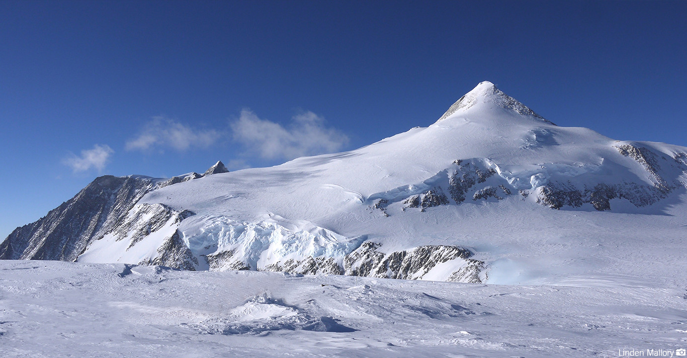

KORONA ZIEMI
KORONA ZIEMI
Masyw Vinsona (4892 m n.p.m.)
Masyw Vinsona – nazwany na cześć amerykańskiego polityka Carla Vinsona – jest nunatakiem, czyli szczytem otoczonym zewsząd przez lądolód. Najwyższy szczyt Antarktydy mierzy 4892 m n.p.m. i wznosi się na prawie 3 km ponad otaczający teren.
Masyw Vinsona zdecydowanie nie jest miejscem dla miłośników ciepła i słońca. W lecie temperatura wynosi tam ok. -30°C, a w zimie spada do nawet -90°C.
Masyw Vinsona, fot. Linden Mallory